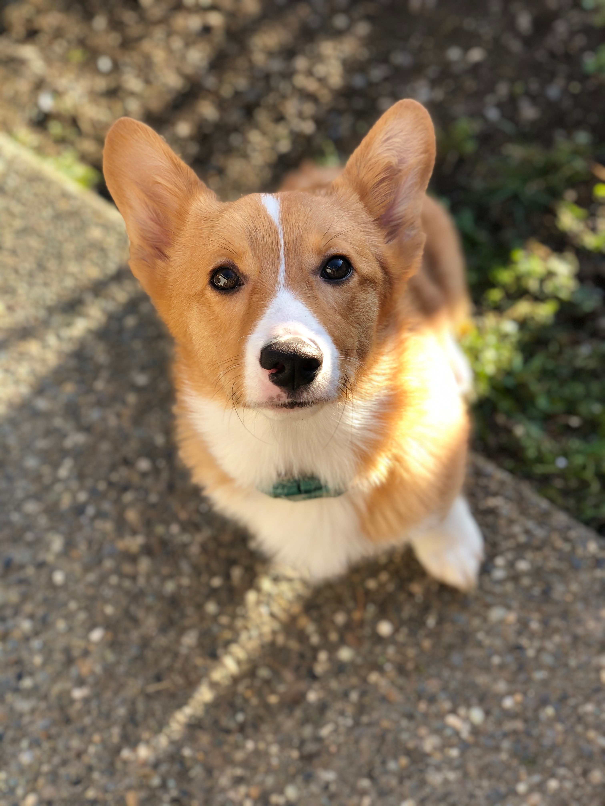
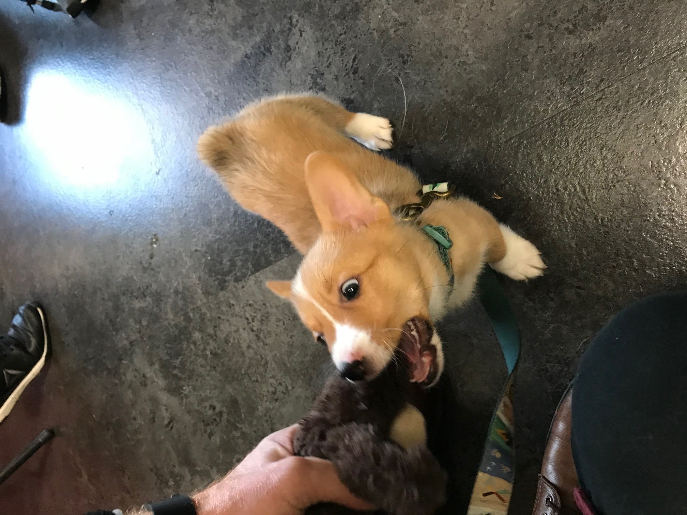

Photos



Hello, there! I'm Burton Guster, but you can call me Gus. I was born on October 12, 2019 in Lynwood, WA. My parents decided to adopt me from a friend 3 days before they found my sister, Lucy, on the streets so our house got packed really quick! As you can probably tell, I'm a corgi so while my legs may be little, my personality is not! I'm great at letting the neighborhood know when there's a bird or squirrel in a 5 mile radius and I really like racing underneath my bother and sisters legs when we play outside, and am getting really good at not getting stepped on. My favorite treats are french fries, pancakes, and salmon. My least favorite things are baths, carrots, and the hairdryer. Thanks for stopping by!